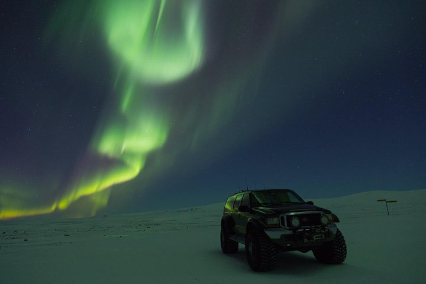

Noruega
Visita las auroras boreales en todo su explendor desde Noruega
¿Por qué visitar Noruega para ver la Aurora Boreal?
Noruega es uno de los mejores lugares del mundo para observar la Aurora Boreal. Sus cielos oscuros y su ubicación geográfica ideal hacen que sea ideal para este fenómeno natural. Además, ofrece una experiencia única con actividades como paseos en trineo, cabañas de madera y visitas a comunidades locales.
Mejores lugares para ver la Aurora Boreal
Algunos de los mejores lugares para observar la Aurora Boreal en Noruega incluyen:
Alta: Un destino popular con una gran cantidad de auroras boreales.
Tromsø: Conocida como la "ciudad de la aurora", ofrece una gran variedad de actividades.
Lofotens: Una región con paisajes impresionantes y condiciones ideales para ver la aurora.
Mejor época para visitar
La mejor época para ver la Aurora Boreal en Noruega es durante los meses de invierno, de septiembre a marzo, cuando las noches son más largas y el cielo está más oscuro. Sin embargo, también es posible observar la aurora en otras épocas del año, aunque las condiciones pueden ser menos favorables.

Para aquellos que buscan una experiencia más exclusiva, hay opciones de cruceros que ofrecen la oportunidad de ver la Aurora Boreal desde el mar. Estos cruceros suelen incluir actividades adicionales como excursiones a tierra, cenas temáticas y charlas sobre el fenómeno de la aurora, lo que hace que sea una experiencia inolvidable para los amantes de la naturaleza y la aventura.
Disponemos de una ruta alternativa y más económica para ver la aurora boreal, que es a mediante coches. Este camino por tierra te llevará a través de paisajes impresionantes, donde podrás disfrutar de la belleza natural de Noruega mientras buscas la aurora boreal. Además, esta opción te brinda la flexibilidad de detenerte en lugares pintorescos y explorar a tu propio ritmo, lo que puede ser una experiencia inolvidable para los amantes de la naturaleza y la aventura.
